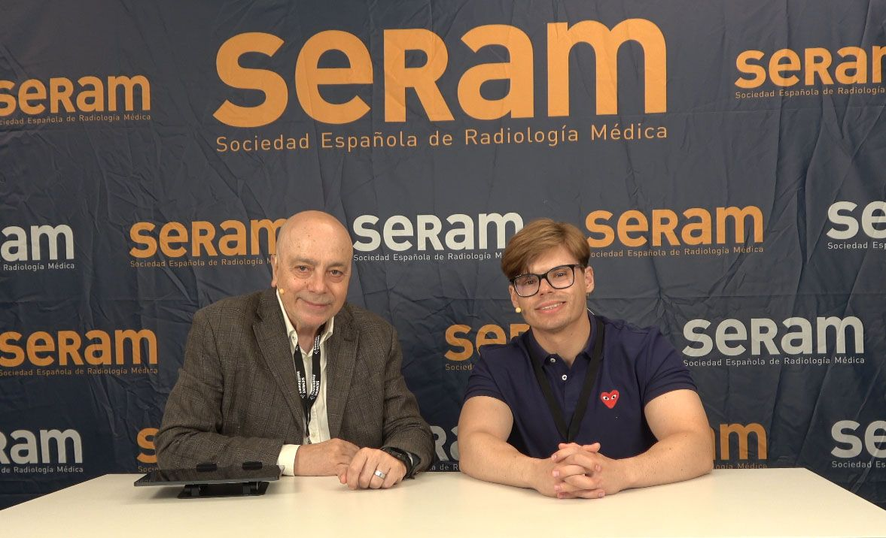
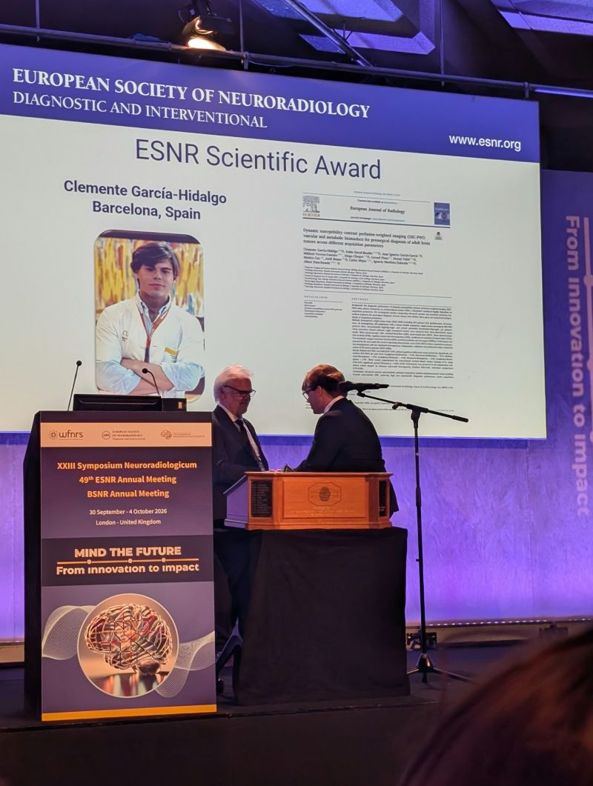
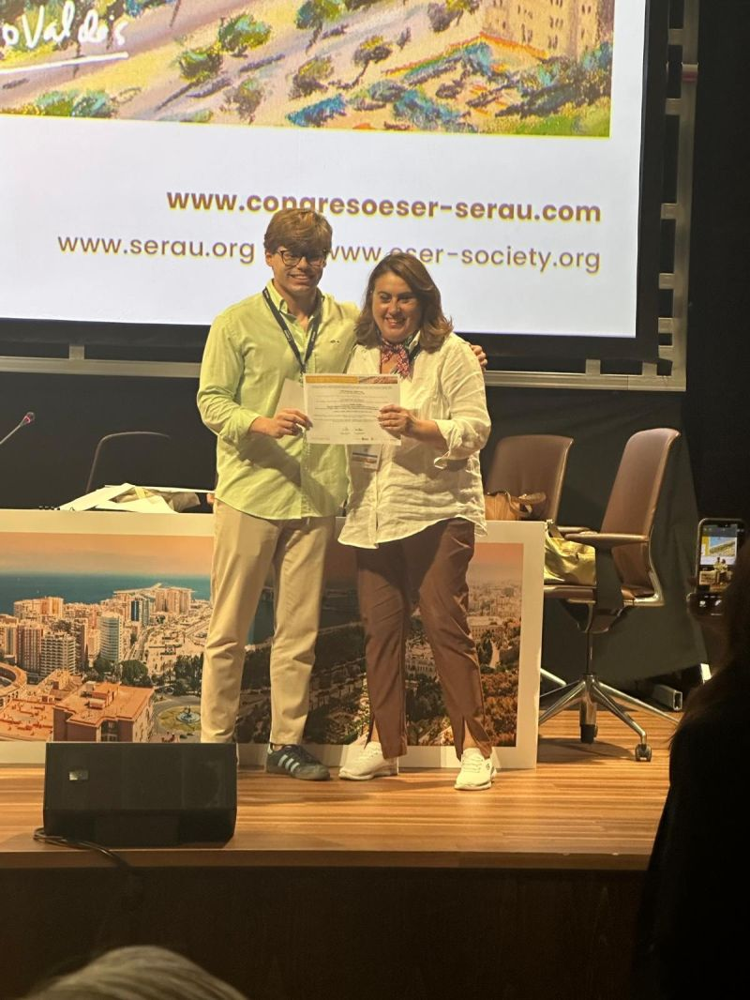

The training, people and collaborations behind my work in radiology, medical imaging and AI. A few moments that have shaped the way I think, and the work I want to do next.
2017 — now
The Bellvitge team, shared in my second-year PhD recap. From my LinkedIn

A conversation about radiology with Carles Aguilar, 2026. Carles Aguilar
October 2026 / London
ESNR Scientific Award 2026
European Society of Neuroradiology
Receiving this award as its youngest recipient and the second from Spain, after my mentor Dr Albert Pons-Escoda, makes it especially meaningful to me.
The award recognises our work on DSC perfusion biomarkers in adult brain tumours. I received it with deep gratitude to my supervisors Albert Pons-Escoda and Ignacio Martínez-Zalacaín, to Pablo Naval-Baudin, and to the whole Bellvitge team.
Covered by La Vanguardia / El Llobregat and the Institut de Diagnòstic per la Imatge.

Receiving the ESNR Scientific Award, London, 2026. From my LinkedInAfter the award ceremony at the Queen Elizabeth II Centre. From my LinkedIn
2026 / Medical AI
From ideas to working tools.
IABiomed · Bracco–EuSoMII · ECR
Writing software brings another kind of discipline to research: an idea has to survive implementation. At IABiomed, my work on visual de-identification of medical images won the Treelogic challenge.
At the Bracco–EuSoMII AI Contest during ECR, I received the Best Model Optimisation award. These hands-on collaborations sit alongside my research on how medical AI is evaluated.
European Radiology · Radiology: Artificial Intelligence · SERAM
Peer review and teaching have become an important part of my training. In 2026, I joined the Yves Menu Review Fellowship at European Radiology and the Radiology: Artificial Intelligence Trainee Editorial Board.
I also serve as general coordinator of Club Bibliográfico SERAM and became a Calatayud editorial fellow with Radiología in 2026. Alongside these roles, I help lead Healthcademia’s AI and innovation work in Spain.
A further research stay at Bellvitge in summer 2025, the Oxford FSL course and DeepBrainTech training at the University of Barcelona helped me deepen my approach to neuroimaging.
I completed my MSc in Bioinformatics with honours in 2026, supported by the College of Physicians of Murcia. My doctoral work also received a College research fellowship for 2025–2026.
AECC scholarship to attend the 2025 Young Cancer Researchers meeting.
Santander scholarships for Fundación General CSIC training in good scientific practice, in two consecutive cohorts.

Award ceremony at the joint SERAU–ESER meeting, Málaga, 2025. From my LinkedIn
2024 / Residency & PhD
Making radiology my daily work.
Hospital Morales Meseguer · Bellvitge–IDIBELL
I began my radiology residency at Hospital Morales Meseguer in May 2024, and started my doctoral studies later that year. Clinical training and the research questions emerging from imaging could now develop side by side.
The year also brought my first ESER congress award and a Fundación SERAM award for a European Radiology paper I coauthored. Sharing these experiences with colleagues made them especially memorable.
Medicine · First publications · Research presentations
Graduating in Medicine brought together six years of study and clinical placements. During the same year, I published my first European Radiology paper and presented research beyond the classroom.
Recognition at Encuentro TF and the first national APURF congress encouraged me to keep pursuing research alongside clinical work.
Best medical undergraduate thesis and associated scholarship, University of Murcia Encuentro TF, 2023.
Best communication, First National Congress of Students of Radiology and Physical Medicine, APURF, 2023.
Best communication, National Medical Education Meeting, 2023.
2022 / Research & entrepreneurship
A first stay at Bellvitge.
Barcelona · Murcia
My first research stay at Bellvitge, in August 2022, marked the beginning of a collaboration that would become central to my doctoral work.
Back in Murcia, the HapticBrain project received an accésit in the Talento UMUEmprende awards. It was an early opportunity to explore how technical ideas could become useful tools for medicine.
I started Medicine at the University of Murcia in 2017. Undergraduate placements in surgery and, later, radiology helped me discover the questions I wanted to spend more time with.
Early opportunities in science, mobility and student research gave me room to explore. By 2021, that curiosity had found a particular home in medical imaging.